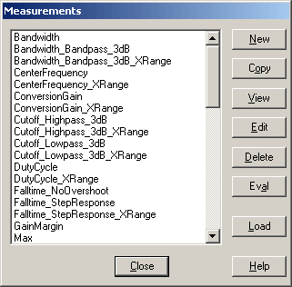
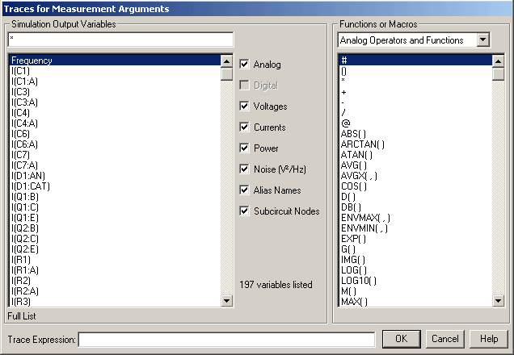
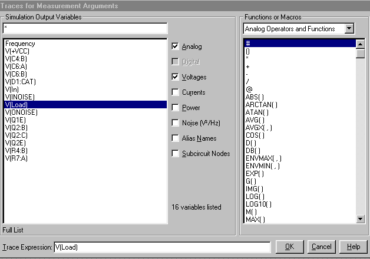
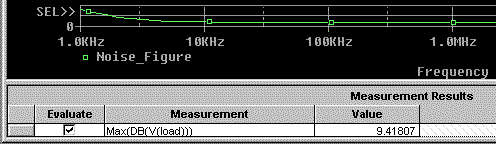
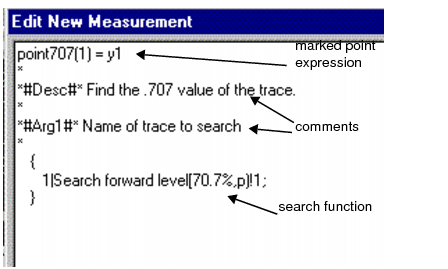

|
|
|||||||||
|
|
|
|
|
|
|
|
|
|
|
This chapter describes how to put together measurement expressions using the measurement definitions included with PSpice1. The Power Users section includes instructions on how to compose your own measurement definitions.
Measurement expressions evaluate the characteristics of a waveform. A measurement expression is made by choosing the waveform and the waveform calculation you want to evaluate.
The waveform calculation is defined by a measurement definition such as rise time, bandpass bandwidth, minimum value, and maximum value.
For example, if you want to measure the risetime of your circuit output voltage, use the following expression:
Risetime(v(out))
For a list of the PSpice measurement definitions, see Measurement definitions included in PSpice.
You can also create your own custom measurement definitions. See Creating custom measurement definitions in the Power Users section of this chapter.

|
Start with a circuit created in design entry tool2 and a working PSpice simulation. |
|
|
Select the measurement definition that matches the waveform characteristics you want to measure. |
|
|
Insert the output variable (whose waveform you want to measure) into the measurement definition, to form a measurement expression. |
Before you create a measurement expression:
Make sure the circuit is valid and you have the results you expect.
These steps show you how to create a measurement expression in PSpice.
First select a measurement definition, and then select output variables to measure. The two combined become a measurement expression.
Work in the Simulation Results view in PSpice. In the side toolbar, click on  .
.
|
|
From the Trace menu in PSpice, select Measurements. |
The Measurements dialog box appears.
|
|
Click Eval (evaluate). |
The Arguments for Measurement Evaluation dialog box appears.
|
|
Click the Name of trace to search button. |
The Traces for Measurement Arguments dialog box appears.
Note: You will only be using the Simulation Output Variables list on the left side. Ignore the Functions or Macros list.
The output variable appears in the Trace Expression field.
|
|
Click OK. |
The Arguments for Measurement Evaluation dialog box reappears with the output variable you chose in the Name of trace to search field.
|
|
Click OK. |
Your new measurement expression is evaluated and displayed in the PSpice window.
|
|
Click OK in the Display Measurement Evaluation pop-up box to continue working in PSpice. |
Your new measurement expression is saved, but it no longer displays in the window. The only way to get another graphical display is to redo these steps.
You can see a numerical evaluation by following the next steps.
|
|
From the View menu in PSpice, select Measurement Results. |
The Measurement Results table displays below the plot window.
|
|
Click the box in the Evaluate column. |
The PSpice calculation for your measurement expression appears in the Value column.
First you select a measurement definition, and then you select an output variable to measure. The two combined become a measurement expression.
Work in the Simulation Results view in PSpice. In the side toolbar, click on  .
.
|
|
From the Trace menu in PSpice, select Measurements. |
The Measurements dialog box appears.
|
|
Click Eval (evaluate). |

The Arguments for Measurement Evaluation dialog box appears.
|
|
Click the Name of trace to search button. |
The Traces for Measurement Arguments dialog box appears.
Note: You will only be using the Simulation Output Variables list on the left side. Ignore the Functions or Macros list.


The output variable appears in the Trace Expression field.
|
|
Click OK. |
The Arguments for Measurement Evaluation dialog box reappears with the output variable you chose in the Name of trace to search field.
|
|
Click OK. |
Your new measurement expression is evaluated and displayed in the PSpice window.
|
|
Click OK in the Display Measurement Evaluation pop-up box to continue working in PSpice. |
Your new measurement expression is saved, but does not display in the window. The only way to get another graphical display is to redo these steps. You can see a numerical evaluation by following the next steps.
|
|
Click Close. |
|
|
From the View menu, select Measurement Results. |
The Measurement Results table displays below the plot window.
|
|
Click the box in the Evaluate column. |
A check mark appears in the Evaluate column check box and the PSpice calculation for your measurement expression appears in the Value column.

Measurement definitions establish rules to locate interesting points and compute values for a waveform. In order to do this, a measurement definition needs:
These are the calculations that compute the final point on the waveform.
These commands specify how to search for the interesting points.
|
|
Examine the waveforms you have and choose which points on the waveform are needed to calculate the measured value. |
|
|
Use the marked points in the Marked Point Expressions to calculate the final value for the waveform. |
Note: An easy way to create a new definition:
From the PSpice Trace menu, select Measurements to open the Measurements dialog box, then:
|
|

|
Click Copy and follow the prompts to rename and edit. |
|
|
From the PSpice Trace menu, choose Measurements. |
The Measurements dialog box appears.
|
|
Click New. |
The New Measurement dialog box appears.
|
|
Type a name for the new measurement in the New Measurement name field. |
Make sure local file is selected.
This stores the new measurement in a .prb file local to the design.
|
|
Click OK. |
The Edit New Measurement dialog box appears.
Note: For syntax information, see Measurement definition syntax
Your new measurement definition is now listed in the Measurements dialog box.
Your new measurement definition is now listed in the Measurements dialog box.
Note: For steps on using a definition in a measurement expression to evaluate a trace, see Composing a measurement expression.
The Measurements dialog box appears.
|
|
Click New. |
The New Measurement dialog box appears.
|
|
Type in a name in the New Measurement name field. |
|
|
Make sure use local file is selected. |
This stores the new measurement in a .prb file local to the design.
|
|
Click OK. |
The Edit New Measurement dialog box appears.

point707(1) = y1
{
1|Search forward level(70.7%, p) !1;
}
Note: The search function is enclosed within curly braces.
Always place a semicolon at the end of the last search function.
*
*#Desc#* Find the .707 value of the trace.
*
*#Arg1#* Name of trace to search
*
Similarly, you can create complex measurements. For example, you might want to determine the time at which a current wave crosses a specified value, say 2mA, and then determine the voltage value at this time. You can use the following syntax:
<Measurement Name>(1,2,Y_value,n_occur)=y2
*#Desc#* Find the value of voltage at the time at which
current crosses Y_value for the nth time.
*#Arg1#* Name of current trace to search
*#Arg2#* Name of voltage trace to search
1| search forward for n_occur:level (Y_value,positive)
2| search forward Xvalue (x1) !2 ;
Note: For syntax information, see Measurement definition syntax.
Your new measurement definition is now listed in the Measurements dialog box.
For an example of using a definition in a measurement expression to evaluate a trace, see Example.
Check out the existing measurement definitions in PSpice for syntax examples.
|
|
From the Trace menu in PSpice, choose Measurements. |
The Measurement dialog box appears.
|
|
Highlight any example, and select View to examine the syntax. |
Can contain any alphanumeric character (A-Z, 0-9) or underscore _ , up to 50 characters in length. The first character should be an upper or lower case letter.
Examples of valid function names: Bandwidth, CenterFreq, delay_time, DBlevel1.
A comment line always starts with an asterisk. Special comment lines include the following examples:
*#Desc#*
*#Arg1#*
Description of an argument used in the measurement definition.
These comment lines will be used in dialog boxes, such as the Arguments for Measurement Evaluation box.
A marked point expression calculates a single value, which is the value of the measurement, based on the X and Y coordinates of one or more marked points on a curve. The marked points are found by the search command.
All the arithmetic operators (+, -, *, /, ( ) ) and all the functions that apply to a single point (for example, ABS(), SGN(), SIN(), SQRT() ) can be used in marked point expressions.
The result of the expression is one number (a real value).
Marked point expressions differ from a regular expression in the following ways:
|
|
Marked point coordinate values (for example, x1, y3), are used instead of simulation output variables (v(4), ic(Q1)). |
|
|
Multiple-point functions such as d(), s(), AVG(), RMS(), MIN(), and MAX() cannot be used. |
|
|
One additional function called MPAVG can also be used. It is used to find the average Y value between 2 marked points. The format is: |
MPAVG(p1, p2,[<.fraction>])
where p1 and p2 are marked X points and fraction (expressed in decimal form) specifies the range. The range specified by [<.fraction>] is centered on the midpoint of the total range. The default value is 1.
MPAVG (x1, x5, .2)
will find the halfway point between x1 and x5 and will calculate the average Y value based on the 20 percent of the range that is centered on the halfway point.
|
search [direction] [/start_point/] [#consecutive_points#] [(range_x [,range_y])] |
Brackets indicate optional arguments.
You can use uppercase or lowercase characters, because searches are case independent.
forward or backward
The direction of the search. Search commands can specify either a forward or reverse direction. The search begins at the origin of the curve.
[Forward] searches in the normal X expression direction, which may appear as backwards on the plot if the X axis has been reversed with a user-defined range.
Forward is the default direction.
[/start_point/]
The starting point to begin a search. The current point is the default.
|
or an expression of marked points, for example, x1 (x1 - (x2 - x1) / 2) |
[#consecutive points#]
Defines the number of consecutive points required for a condition to be met. Usage varies for individual conditions; the default is 1.
A peak is a data point with one neighboring data point on both sides that has a lower Y value than the data point.
If [#consecutive_points#] is 2 and <condition> is PEak, then the peak searched for is a data point with two neighboring data points on both sides with lower Y values than the marked data point.
[(range_x[,range_y])]
Specifies the range of values to confine the search.
The range can be specified as floating-point values, as a percent of the full range, as marked points, or as an expression of marked points. The default range is all points available.
|
X range limited from 1e-9 to 200e-9, Y range defaults to full range |
|
[for] [repeat:]
Specifies which occurrence of <condition> to find.
If repeat is greater than the number of found instances of <condition>, then the last <condition> found is used.
2:LEvel
would find the second level crossing.
<condition>
Must be exactly one of the following:
Each <condition> requires just the first 2 characters of the word. For example, you can shorten LEvel to LE.
If a <condition> is not found, then either the cursor is not moved or the measurement is not evaluated.
LEvel(value[,posneg])
[,posneg] Finds the next Y value crossing at the specified level. This can be between real data points, in which case an interpolated artificial point is created.
At least [#consecutive_points#]-1 points following the level crossing point must be on the same side of the level crossing for the first point to count as the level crossing.
[,posneg] can be Positive (P), Negative (P), or Both (B). The default is Both.
(value) can take any of the following forms:
|
or an expression of marked points |
|
|
a value relative to startvalue |
.-3 ⇒ startvalue -3 .+3 ⇒ startvalue +3 |
|
a db value relative to startvalue |
.-3db ⇒ 3db below startvalue .+3db ⇒ 3db above startvalue |
|
max-3 ⇒ maxrng -3 min+3 ⇒ minrng +3 |
|
|
a db value relative to max or min |
max-3db ⇒ 3db below maxrng min+3db ⇒ 3db above minrng |
decimal point ( . )
A decimal point ( . ) represents the Y value of the last point found using a search on the current trace expression of the measurement. If this is the first search command, then it represents the Y value of the startpoint of the search.
SLope[(posneg)]
Finds the next maximum slope (positive or negative as specified) in the specified direction.
[(posneg)] refers to the slope going Positive (P), Negative (N), or Both (B). If more than the next [#consecutive_points#] points have zero or opposite slope, the Slope function does not look any further for the maximum slope.
Positive slope means increasing Y value for increasing indices of the X expression.
The point found is an artificial point halfway between the two data points defining the maximum slope.
The default [(posneg)] is Positive.
PEak
Finds the nearest peak. At least [#consecutive_points#] points on each side of the peak must have Y values less than the peak Y value.
TRough
Finds nearest negative peak. At least [#consecutive_points#] points on each side of the trough must have Y values greater than the trough Y value.
MAx
Finds the greatest Y value for all points in the specified X range. If more than one maximum exists (same Y values), then the nearest one is found.
MAx is not affected by [direction], [#consecutive_points#], or [repeat:].
MIn
Finds the minimum Y value for all points in the specified X range.
MIn is not affected by [direction], [#consecutive_points#], or [repeat:].
POint
Finds the next data point in the given direction.
XValue(value)
Finds the first point on the curve that has the specified X axis value.
The (value) is a floating-point value or percent of full range.
XValue is not affected by [direction], [#consecutive_points#], [(range_x [,range_y])], or [repeat:].
(value) can take any of the following forms:
|
or an expression of marked points |
|
|
a value relative to startvalue |
.-3 ⇒ startvalue -3 .+3 ⇒ startvalue +3 |
|
a db value relative to startvalue |
.-3db ⇒ 3db below startvalue .+3db ⇒ 3db above startvalue |
|
max-3 ⇒ maxrng -3 min+3 ⇒ minrng +3 |
The measurement definition is made up of:
This example also includes comments about:
Any line beginning with an asterisk is considered a comment line.
Risetime(1) = x2-x1 * *#Desc#* Find the difference between the X values where the trace first *#Desc#* crosses 10% and then 90% of its maximum value with a positive *#Desc#* slope. *#Desc#* (i.e. Find the risetime of a step response curve with no *#Desc#* overshoot. If the signal has overshoot, use GenRise().) * *#Arg1#* Name of trace to search * * Usage: *Risetime(<trace name>) * { 1|Search forward level(10%, p) !1 Search forward level(90%, p) !2; } |
The name of the measurement is Risetime. Risetime will take 1 argument, a trace name (as seen from the comments).
The first search function searches forward (positive x direction) for the point on the trace where the waveform crosses the 10% point in a positive direction. That point's X and Y coordinates will be marked and saved as point 1.
The second search function searches forward in the positive direction for the point on the trace where the waveform crosses the 90% mark. That point's X and Y coordinates will be marked and saved as point 2.
The marked point expression is x2-x1. This means the measurement calculates the X value of point 2 minus the X value of point 1 and returns that number.
|
Depending on the license available, you will access either PSpice or AMS Simulator. |
|
In this guide, design entry tool is used for both OrCAD Capture and Design Entry HDL. Any differences between the two tools is mentioned, if necessary. |